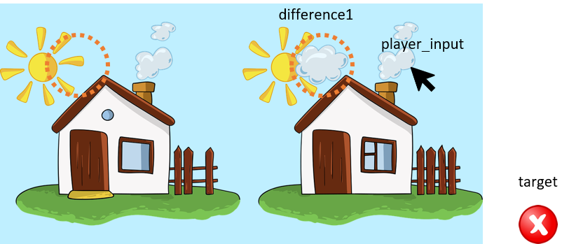
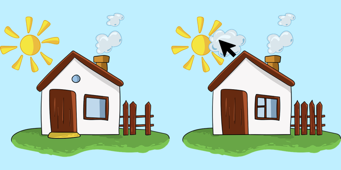
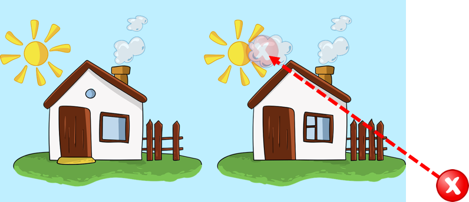
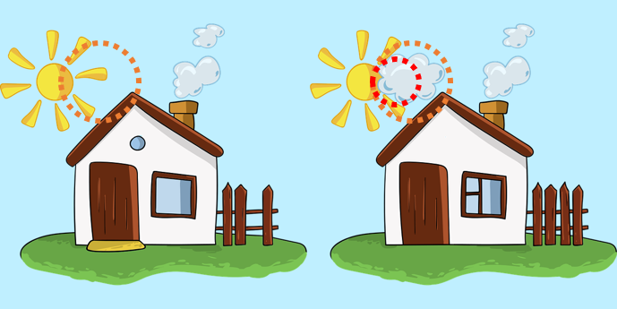
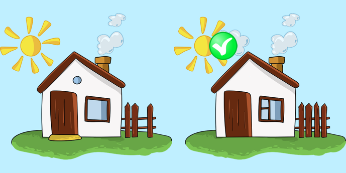

Tutorials for 2D games projects
Spotter | Putting the player interaction into level 1.
The player will need a game object on the level to capture the input. We will call this, "player_input". It can be confusing to understand the difference between the target object and the player_input object. This is what is happening:
The picture, the target, the difference and the player_input are all game objects. Target (a reusable component) does not belong to the level, but the other objects do. Although the player_input game object needs to be in a level, it's script exists in the assets and therefore is also a reusable component between the levels. Clearly the differences will be in different places in other levels so they must be part of the level.

The player will click somewhere on the screen. The 'player_input' object captures this, although it does not have a sprite itself.

This causes the target factory to spawn a new target at the mouse position.

The spawned target collision object and the difference collision object will cause a collision which is picked up by the target script.

The collision handling script changes the sprite of the target to a tick.
The difference is disabled preventing another collision from being triggered.

The final step is therefore to create a player_input game object on the level, attach the player_input script and the factory to it.
- In the assets panel, in the 'main' folder, double click 'level1.collection'.
- In the outline panel, right click, 'Collection' and select, 'Add Game Object'.
- In the properties panel, change the 'Id' property to 'player_input'.
- In the outline panel, right click, 'player_input' and select, 'Add Component File'.
- Select, '/main/player_input.script' and click, 'OK'.
- In the outline panel, right click, 'player_input' and select, 'Add Component File'.
- Select, '/main/target.factory' and click 'OK'.
- Save the changes by pressing CTRL-S or 'File', 'Save All'.
- Run the program by pressing F5 or choosing, 'Debug', 'Start / Attach' from the menu bar. Choose level 1. If you click where the difference is next to the sun a tick will appear. If you click anywhere else a cross will appear. You can press Escape to return to the title screen.

That's the core mechanics done but we need to add more differences and the second level. Stage 5 >
 Craig'n'Dave | Version 1.3
Craig'n'Dave | Version 1.3